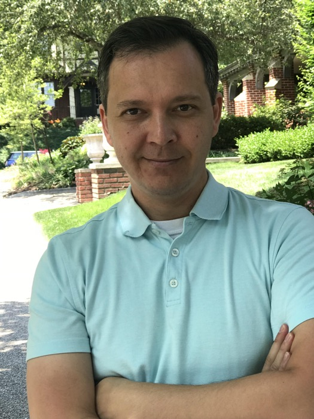
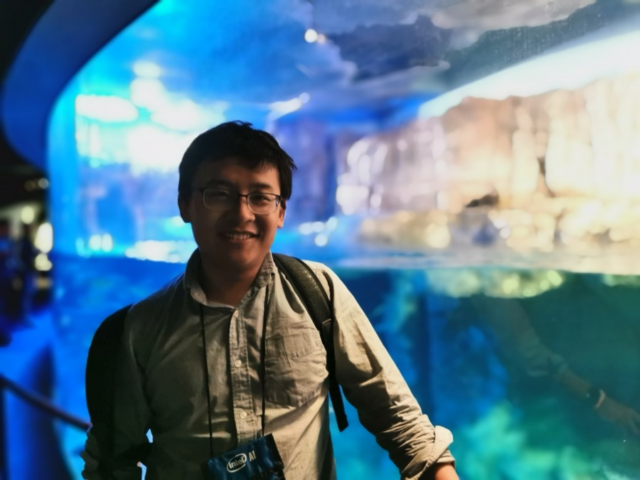
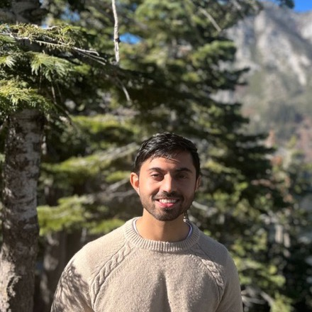
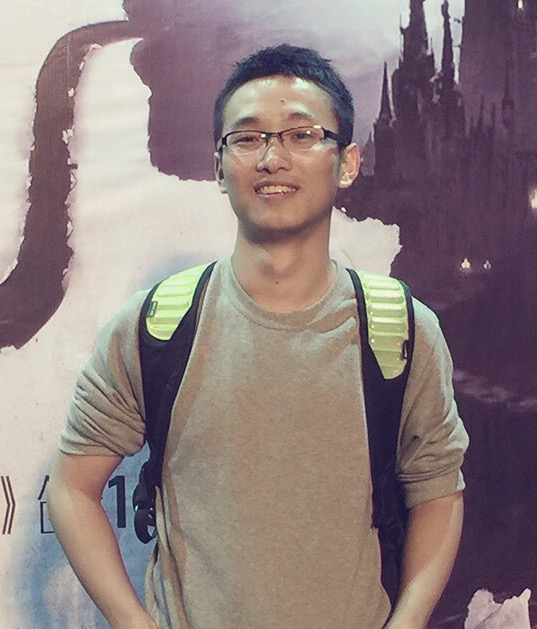
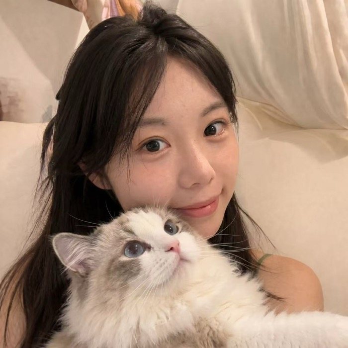
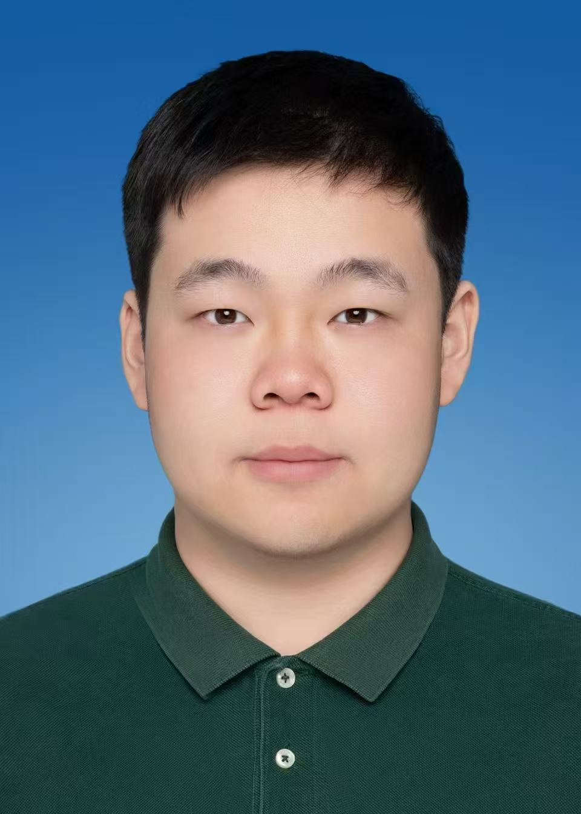
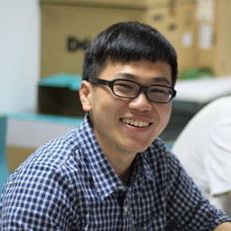
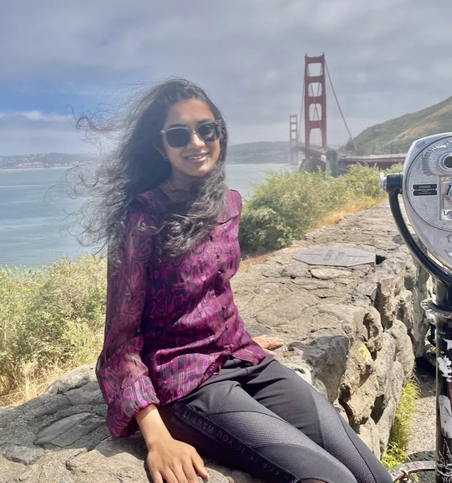

Agent capabilities and architectures
Long-horizon planning, reasoning, tool use, memory, reflection, self-correction, task decomposition, workflow automation, and agentic foundation models.
NeurIPS 2026 Workshop
A full-day NeurIPS 2026 workshop on what AI agents can and cannot reliably do: the capabilities they already demonstrate, the bottlenecks that limit them, and where the field should go next.
Why this workshop
AI agents are moving from passive assistants toward autonomous systems that plan, use tools, interact with environments, and collaborate with humans. The urgent question is no longer whether agents can be useful, but how far they can reliably go and what bottlenecks define the next frontier.
This workshop brings together researchers and practitioners from machine learning, natural language processing, computer vision, human-computer interaction, cognitive science, systems, safety, and AI governance to examine the present and future of AI agents. Strong capability claims should be paired with clear evidence about failure modes, autonomy boundaries, oversight, compute cost, privacy, deployment constraints, and evaluation protocols that survive contact with real workflows.
Scope
We welcome technical papers, empirical studies, position papers, datasets, benchmarks, tools, and deployed-system analyses that clarify what AI agents can do today, what prevents them from going further, and what research agenda should come next.
Long-horizon planning, reasoning, tool use, memory, reflection, self-correction, task decomposition, workflow automation, and agentic foundation models.
Language agents, vision-language agents, web agents, GUI agents, coding agents, scientific agents, embodied agents, robotic agents, and complex interactive environments.
Cooperation, competition, communication, coordination, negotiation, emergent behavior, agent societies, collective intelligence, and scalable collaboration.
Agent capability benchmarks, long-horizon task evaluation, real-world assessment, interactive environments, reproducible protocols, failure analysis, and autonomy metrics.
Hallucination, compounding errors, poor generalization, planning failures, memory degradation, limited causal understanding, inefficient exploration, and brittle deployment.
Safe tool use, controllability, transparency, robustness, privacy, security, misuse prevention, reward hacking, human oversight, accountability, and policy implications.
Reinforcement learning for agents, test-time adaptation, continual learning, self-improvement, environment feedback, human-in-the-loop learning, and preference learning.
Efficient inference, memory and context compression, scalable orchestration, low-cost deployment, distributed systems, latency reduction, and resource-aware design.
Submission
Formal page limits, formatting rules, review process details, and the submission portal will be updated after the NeurIPS 2026 workshop process is finalized. We expect roughly 100-150 submissions.
We are especially interested in work that connects capability claims with principled evidence. Agent research often moves quickly from impressive demos to broad predictions; this workshop will privilege papers that make progress, bottlenecks, and future directions testable.
Expected formats include technical papers, empirical studies, benchmark or dataset papers, systems papers, and position papers. We will also welcome rigorous negative results, bottleneck analyses, and limitation studies.
We have secured approximately 60-70 reviewing committee members, along with around 10 senior researchers or faculty members who will serve as workshop area chairs. Committee recruitment is still ongoing.
Schedule
This workshop is planned as a full-day in-person workshop at NeurIPS 2026, with live streaming support when conference infrastructure allows. All confirmed invited speakers listed below have accepted the invitation.
Workshop flow
The timetable below follows the current proposal and remains tentative until NeurIPS 2026 workshop scheduling, final talk titles, panel assignments, and paper decisions are finalized.
Workshop framing, logistics, and the capabilities-bottlenecks-future-directions agenda.
Final talk title TBA.
Final talk title TBA.
Poster session and coffee socials.
Final talk title TBA.
Final talk title TBA.
Selected contributed papers.
Lunch break.
Final talk title TBA.
Final talk title TBA.
Poster session and demos.
Final talk title TBA.
Final talk title TBA.
Selected contributed papers.
Panel discussion.
Networking session.
Closing remarks.
Speakers
All eight invited speakers have confirmed participation. Final talk titles, panel assignments, and session moderators will be updated as the program is finalized.
UC Berkeley

Carnegie Mellon University

Stanford University

Johns Hopkins University / NVIDIA

Recursive Intelligence

DeepMind Gemini
Meituan / M17 LongCat Team
DeepMind
Organizers
The organizing committee spans academia and industry across AI agents, multimodal foundation models, efficient learning, generative modeling, evaluation, and safety.

OrganizerMBZUAI

OrganizerUniversity College London

OrganizerMBZUAI
MBZUAI
Monash University

OrganizerxAI

OrganizerSalesforce AI Research
Shenzhen Loop Area Institute
Sponsors
This section is reserved for confirmed academic partners, industry partners, compute sponsors, award sponsors, and demo-session supporters.
Universities, research labs, and nonprofit groups supporting the workshop can be listed here.
Company sponsors, compute sponsors, demo partners, and award sponsors can be added once confirmed.
Contact
We plan to use a dedicated email group and Slack channel to monitor inquiries during the submission, review, and post-acceptance periods.
References
The proposal bibliography frames the workshop around AI-agent surveys, agent capabilities, evaluation, bottlenecks, safety, and governance.